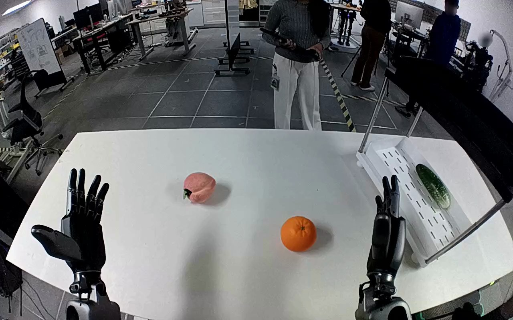

NVIDIA GR1 · 6
Video 6

Visual review action_review.json
{
"prompt_protocol": "humanoid_action_v1",
"prompt_provenance": "visually_authored_from_video_and_initial_frame",
"reviewed_contact_sheets": [
"sheet_001.jpg"
],
"inspected_frame_stride": 2,
"inspected_sampled_frame_count": 60,
"initial_scene": "Forward-facing robot-mounted view with two forearms and open dexterous hands above a white tabletop. An orange is near the active right hand; a pink fruit-shaped object is farther left. A lower white slotted shelf on the robot's right already holds a green elongated object.",
"observed_sequence": [
{
"frame_interval": [
0,
24
],
"action": "Both hands remain open over the tabletop. The orange rests on the table; the left hand remains inactive.",
"confidence": "high"
},
{
"frame_interval": [
25,
38
],
"action": "The right hand moves toward the orange with its thumb extended to one side and fingers on the other, beginning to surround it without yet lifting.",
"confidence": "high"
},
{
"frame_interval": [
39,
64
],
"action": "The right hand adjusts around the orange and closes its fingers and thumb into a secure opposing grasp; the left hand does not support or touch the object.",
"confidence": "high"
},
{
"frame_interval": [
65,
78
],
"action": "The right hand lifts the orange clear of its original tabletop location, maintaining the grasp.",
"confidence": "high"
},
{
"frame_interval": [
79,
104
],
"action": "The right arm transports the grasped orange rightward onto the lower white shelf beside the green object, then lowers it toward the shelf surface.",
"confidence": "high"
},
{
"frame_interval": [
105,
119
],
"action": "The right hand sets the orange down and opens its fingers. The orange remains at the near portion of the white shelf while the hand stays immediately beside it; no completed hand withdrawal follows.",
"confidence": "high"
}
],
"arm_hand_roles": {
"right": "Sole manipulating hand: surrounds and grasps the orange with thumb and fingers, lifts it, carries it to the lower white shelf, lowers it and opens the fingers.",
"left": "Open inactive hand held above the left part of the tabletop; no grasp, support, transfer or object contact."
},
"anatomical_side_evidence": {
"basis": "The camera looks forward from the robot toward the work surface. The paired forearms enter from the robot-side lower edges: the active forearm is on the robot's right and its counterpart on the left; the active hand remains attached to that same forearm throughout. This agrees with the source instruction naming the right hand, but the visual arm continuity and forward viewing direction establish the naming.",
"confidence": "high",
"limitations": "Shoulder attachments and torso are outside the camera view; side identification uses the robot-mounted forward view and paired forearms, rather than an external facing-camera image convention."
},
"coordination": "Single-hand manipulation. The left hand remains open and contributes no support or transfer.",
"terminal_state": "The orange is on the near portion of the lower white shelf beside the green object. The right fingers are open, with the right hand still adjacent to the orange; the left hand remains open above the tabletop.",
"selected_execution_status": "success",
"uncertainties": [
"The shelf and right hand partially occlude the orange's precise base contact at the ending; the orange remains positioned on the shelf as the fingers open, but no later unobstructed view or completed hand withdrawal is shown."
],
"annotation_discrepancies": [],
"evidence_frame_indices": [
0,
28,
42,
64,
72,
92,
104,
114,
119
],
"inspection_coverage": {
"sampled_source_frames": "All even source frames from 0 through 118 inclusive, viewed in sheet_001.jpg.",
"native_source_frames": [
28,
42,
64,
72,
92,
104,
114,
119
],
"source_initial_png_viewed_at_native_resolution": true
},
"video_id": "6",
"dataset": "NVIDIA_GR1_100",
"dedicated_review_agent": "review_gr1_6",
"review_source_video": "NVIDIA_GR1_100/6/original/original.mp4",
"source_frame_count": 120,
"source_fps": 20.0,
"native_detail_frames": [
28,
42,
64,
72,
92,
104,
114,
119
],
"world_model_prompt": "The robot closes its right hand around the orange on the tabletop and lifts it, holding it between its thumb and fingers. It carries the orange to the lower white shelf, sets it down beside the green object, and opens its fingers, leaving the orange on the shelf with the hand still beside it. Keep the camera fixed; preserve robot geometry, physically valid joint motion, and normal gripper opening and closing.",
"original_task_instruction": "Use the right hand to pick up orange from middle of table to bottom white shelf.",
"selected_segment": {
"start_frame": 0,
"end_frame_exclusive": 120,
"reason": "Complete original single-task reference; no cropping or trimming requested."
},
"source_video_sha256": "666ecd2e5bcaab8847a880413e579e15ebdc0b0efcb2ec8653135aa08b329124",
"review_completed_at": "2026-10-13T18:22:53.303618+00:00"
}